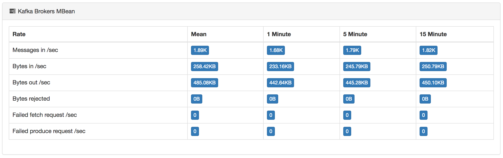
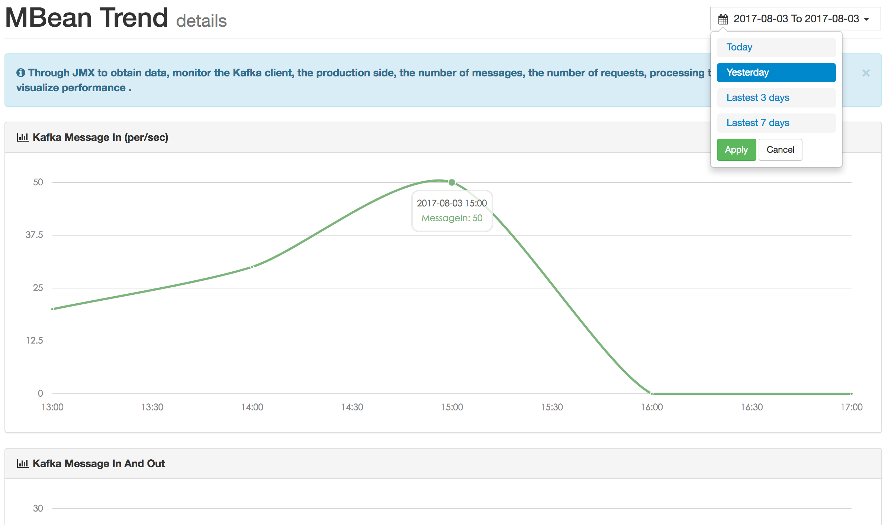

Metrics
> Quick Start >
Metrics
Overview
Through JMX to obtain data, monitor the Kafka client, the production side, the number of messages, the number of requests, processing time and other data to visualize performance.
If your data is empty, check that the port of JMX is started . If you do not start, you can edit the script before you start
vi kafka-server-start.sh
...
if [ "x$KAFKA_HEAP_OPTS" = "x" ]; then
export KAFKA_HEAP_OPTS="-server -Xms2G -Xmx2G -XX:PermSize=128m -XX:+UseG1GC -XX:MaxGCPauseMillis=200 -XX:ParallelGCThreads=8 -XX:ConcGCThreads=5 -XX:InitiatingHeapOccupancyPercent=70"
export JMX_PORT="9999"
fiZookeeper
When your zookeeper version is after 3.5, you need to open zkcli permission to repair the script content
vi zkServer.sh
...
// after 77 lines
ZOOMAIN="-Dzookeeper.4lw.commands.whitelist=* ${ZOOMAIN}"Trend
Observe Kafka index data according to different dimensions.
Brokers Metrics
EFAK monitoring summarizes the node data of the whole cluster. Through the monitoring chart, you can observe the running state of the cluster.
| Quota | Message |
|---|---|
| MessagesInPerSec | Broker aggregate incoming message rate. |
| BytesInPerSec | Broker aggregate incoming byte rate. |
| BytesOutPerSec | Broker aggregate outgoing byte rate. |
| BytesRejectedPerSec | Broker aggregate rejected byte rate. |
| FailedFetchRequestsPerSec | Broker fetch request rate for requests that failed. |
| FailedProduceRequestsPerSec | Produce request rate for requests that failed. |
| ProduceMessageConversionsPerSec | The number of produce message conversions per second for the broker. |
| ReplicationBytesInPerSec | Byte in rate from other brokers. |
| ReplicationBytesOutPerSec | Byte out rate to other brokers. |
| TotalFetchRequestsPerSec | Fetch request rate. |
| TotalProduceRequestsPerSec | Produce request rate. |
| FreePhysicalMemorySize | Broker free memory size. |